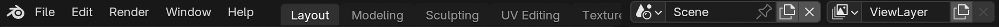
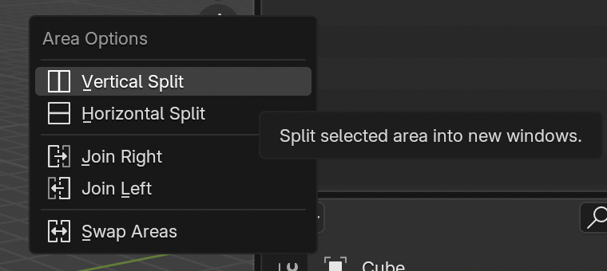
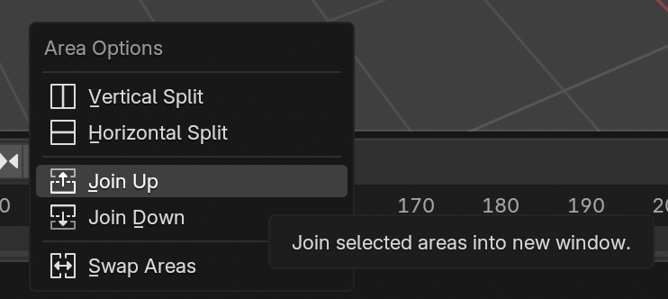
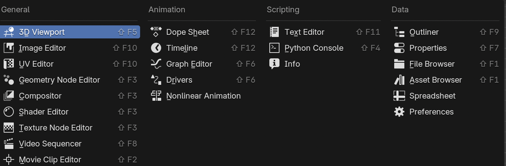

인터페이스
- 블렌더 인터페이스는 다음과 같은 구조로 구성된다.
- 메인 윈도우(main window)
- 워크스페이스(workspace)
- 에어리어(area)
- 에디터(editor)
메인 윈도우

- 메인 윈도우는 좌측부터 다음과 같이 구성된다.
- 블렌더 아이콘
- 메뉴
- 기본 워크스페이스 목록
- 워크스페이스 추가 아이콘
- 신 셀렉터
- 레이어 셀렉터
워크스페이스
- 워크스페이스는 “미리 정해진 에이리어와 에디터의 조합”이다.
- 워크스페이스의 종류는 5가지 카테고리의 총 23개이다.
- General (11개)
- Animation
- Compositing
- Layout
- Modeling
- 2D Animation (4개)
- 2D Animation
- Sculpting (2개)
- Scupting
- VFX (4개)
- Compositing
- Video Editing (2개)
- Rendering
- General (11개)
- 가장 기본적인 워크스페이스는 모델링(Modeling) 워크스페이스다.
- 여기에서는 모델링 워크스페이스부터 사용한다.
워크스페이스 이동
- 워크스페이스 이동 단축키: Ctrl+PageUpCtrl+PageUp 또는 Ctrl+PageDownCtrl+PageDown
에어리어
에어리어는 화면의 영역을 나타낸다.
에어리어의 경계에서는 마우스가 달라진다.
- 선 경계
- 경계선의 위치를 옮겨서 영역의 비율을 조정할 수 있다
- 점 경계
- 에어리어를 분할할 수 있다.
- 선 경계
영역 변경을 한 경우에는 Undo 명령으로 되돌릴 수 없음. 디폴트 설정을 로드해야 함
경계선에서 우클릭을 하면 에어리어 옵션(area option) 표시
- vertical split
- horizontal split
- join right
- join left
- join up
- join down
- swap areas


에디터
- 각 에어리어는 하나의 에디터가 될 수 있다.
- 에디터의 종류는 4가지 카테고리의 총 23개이다.
- 각 에디터 별로 서로 다른 로고 아이콘을 가진다.

- 가장 기본적이고 많이 사용하는 에디터는 “3D Viewport”다.
헤더, 메뉴, 툴바, 사이드바
- 에디터는 해당 에디터 영역의 머리띠에 해당하는 헤더를 가진다.
- 일부 에디터는 메뉴, 툴바, 사이드바 등의 추가 요소를 가진다.